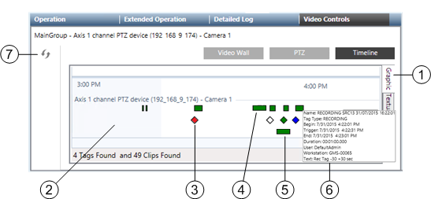
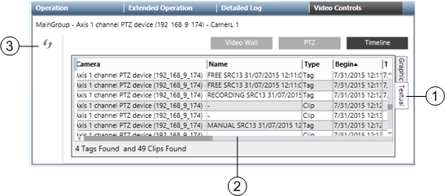

Camera Timeline Reference
In the Video controls of the Contextual pane, the Timeline can show both graphically and textually the recent video recordings and tags of the selected camera. Select the Graphic or Textual display on the tabs located on the right side of the timeline area.
NOTE: By default the timeline shows the latest 24 hours of the camera operations. If required, you can reduce this time by modifying the Camera Timeline Window property. This may be necessary if you see a message in the timeline indicating "too many tags".
Graphic Tab
In graphic mode, the timeline shows a 2-color column grid that represents the recent camera operations. On the grid, tags appear as colored diamonds, whereas recordings appear as green bars above the tags. You can expand the tag view by double-clicking the corresponding diamond symbol: depending on the length of the tag, a green bar may appear below the diamond to show the tag duration. Instantaneous tags will only expand with a new diamond symbol.
Identify video recordings by hovering the mouse pointer over the symbols and getting detailed information in a tooltip box.
Use the scrollbar at the bottom to move left/right on the timeline. Adjust the time resolution using the mouse wheel or modifying the size of the track of the scrollbar. Click the Refresh icon  on the toolbar to get the latest available data from the archive.
on the toolbar to get the latest available data from the archive.
From the timeline, drag a tag or a recording onto a monitor of the video view to display the recording.

Graphical Timeline | ||
| Name | Description |
1 | Graphic tab | Select graphic display here. |
2 | Timeline | Graphically displays recordings and tags on a timeline grid. |
3 | Tag diamond | Shows a tag: double-click the diamond to expand the tag duration on the timeline. Drag-and-drop it onto a monitor to replay the recording. Note the tag color code: |
4 | Recording bar | Shows a recording: Drag-and-drop the bar onto a monitor to replay the recording. |
5 | Tag bar | Shows the tag duration. Drag-and-drop it onto a monitor to replay the recording. |
6 | Tooltip | Allows for recording/tag identification. It can contain the following: |
7 | Refresh icon | Allows for getting latest available data in the timeline. |
Textual tab
In textual mode, tags and recordings are listed in a compact table that presents the following recording information (depending on the type of item, not all columns are populated):
- Camera
- Name
- Type (Clip for video recordings or Mark for tags)
- Begin, Trigger (offset), and End time
- Duration
- Tag Type
- Event ID, Event Source, Event Cause
- User
- Workstation
- Text
From the table, drag-and-drop a tag or a recording line onto a monitor of the video view to display the recording.

Textual Timeline | ||
| Name | Description |
1 | Textual tab | Select textual display here. |
2 | Item list | Lists recordings and tags in a table. Select a row and drag-and-drop an item onto a monitor to replay the recording. |
3 | Refresh icon | Allows for getting latest available data in the timeline. |
Replay Controls on Monitors
Monitors that are playing back recorded video are highlighted with a green border. When you hover the mouse over the monitor, playback controls become available.

Replay Controls | ||
| Item | Description |
1 | Speed and direction | Current speed and direction of playback, as set by the playback controls (play, rewind/fast forward). |
2 | X symbol | Close the playback session. |
3 | Export | Export the recording of the time period being displayed. |
4 | Snapshot | Take a snapshot of the image being played back on the monitor. The image file is saved on the Desigo CC server. See Snapshot Location on Server. |
5 | Tag | Bookmark the current point in the video clip. This creates a playback tag (yellow diamond) in the timeline. |
6 | End time | Based on the post-trigger time (see Global Video Control Commands). It is set to 1 hour for recordings started by Manual and Free tags. Depending on the VMS configuration, video images may not be available as far as one hour later. |
7 | Playback controls | Rewind |
8 | Start time | Based on the pre-trigger time (see Global Video Control Commands). It is set to 1 hour for recordings started by Manual and Free tags. Depending on the VMS configuration, video images may not be available as far as one hour earlier. |


 , play/pause
, play/pause  /
/ and
and  fast forward.
fast forward. Jump to recording trigger time
Jump to recording trigger time